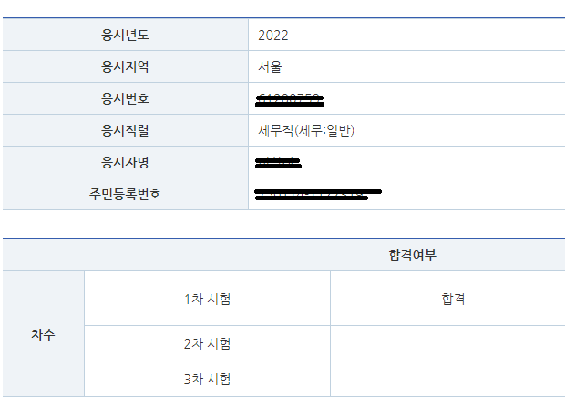
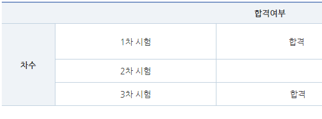

----- 면접준비 ----- 면접준비 하면서 느낀점과 팁 (보시려면 터치하세요) ----- 면접시험(2022.6.15.) 장소: kintext일산(8:00 오전 조) ------ : 첫차를 놓칠까봐 잠을 너무 설침 (새벽 3시에 일어나 5시까지 계속 자다 깨다 반복함) (나두 남들처럼 면접장 근처 모텔같은 데서 자고 싶었지만 통장 잔고가 0에 수렴하는 관계로...) 복장 : 롯데마트 폐업할 때 산 2만원짜리 재킷과 7천원 주고 산 검은색 바지를 입고 감 (넥타이는 안 함)(캐주얼 복장으로 오신분들도 있었어요.) : 구두는 없어서 쿠팡에서 5만원주고 삼 (화면에서 볼 때와 다르게 앞이 너무 뾰족하고 밝은 갈색이여서 당황ㅠㅠ) --- : 면접장에 도착할 즈음 면접순서가 1번이라고 문자가 옴 (내 뒷번호인 2번이 끝내 오지 않음, 아마 필기점수가 커트라인에 걸려서 지방직에 집중하려고 한 것 같음) --- 나의 전략 ● 말은 천천히 또박또박 하기 (면접관들은 면접시간을 채워야 하기 때문에 너무 빨리하면 질문만 더 받게 돼요) (문장마다 쉬어주면 좋은 것 같아요) (알고는 있지만 실전에서는 자신도 모르게 빨리말하게 돼요) (5분발표 종이에 작게 '천천히 말하기'라고 적어두시는 걸 추천드려요) ● 두괄식으로 말하기 (답을 말하고 이유나 관련 경험을 말하는 것이 의미전달 하기에 더 명확) ● 답변할 때는 '복문'보다는 주로 '단문'을 사용하기 (두괄식으로 말하게 되면 자연스럽게 단문이 됨) ● 5분 발표할 때 메모는 마인드 맵처럼 작성하기 (갑자기 떠오르는 아이디어를 추가하기 쉬움) (연습이 부족해서 그런지 실전에서는 제대로 그러지 못했어요) ---- (나의 전략은 그럴 듯 했지만 실전에서는 우와좌왕 그 자체였음) (면접관께 끝인사도 안 하고, 5분 발표 문제지를 면접관에게 주는 실수까지ㅠㅠ) ====== 최종발표(2022.7.6.)
: 미흡이 아니라 다행 : 성적확인을 해보니 회계학 찍은 게 2개나 맞음.(_ _)V (역시 회계학 1문제를 버리고 정답률이 높은 다른 과목 2~3문제를 푸는게 최선의 선택임)